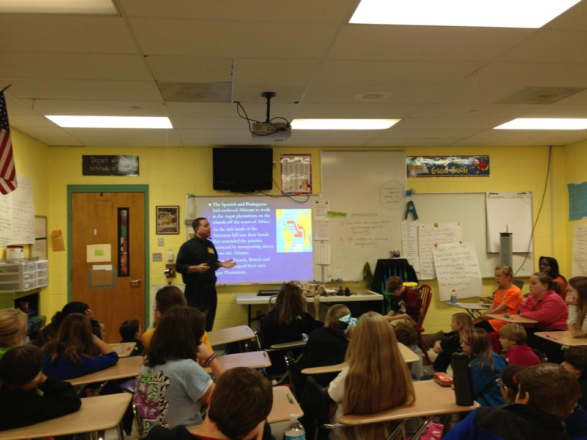
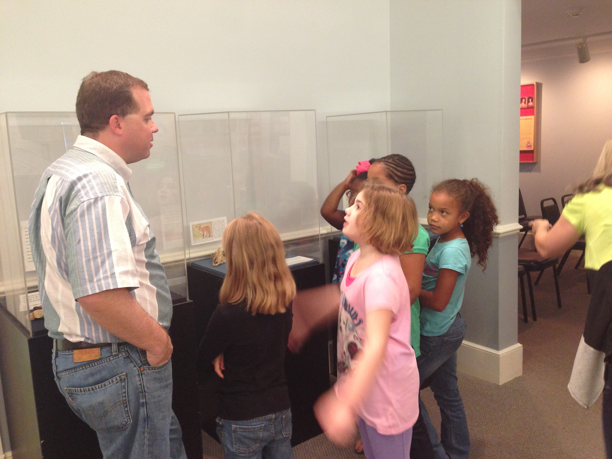

<!DOCTYPE html>
<html>
<head>
  <!--Meta Tags -->
  <meta charset="utf-8">
  <meta http-equiv="X-UA-Compatible" content="IE=edge">
  <meta name="viewport" content="width=device-width, initial-scale=1">
  <meta name="description" content="Main website for the Desoto County Museum in Hernando, MS">
  <meta name="author" content="Josh Bryant">
  <!--Title-->
  <title>DeSoto County Museum - Explore our heritage</title>
  <!--Stylesheets-->
  <link rel="stylesheet" href="css/normalize.css">
  <link rel="stylesheet" href="css/bootstrap.min.css">
  <link rel="stylesheet" href="css/style.css">

  <!--Icons-->
  <link rel="shortcut icon" type="image/x-icon" href="favicon.ico">

</head>
<body>
  <script type="text/x-handlebars">
    <div class="container">
      <header>
        <div class="row top">
          <div class="col-md-2">
            
          </div>
          <div class="col-md-7">
            <h1 class="text-center">DeSoto County Museum</h1>
            <p class="text-center">111 E Commerce Street<br />Hernando, MS 38671</p>
          </div>
          <div class="col-md-3">
            <p>Phone: <a href="tel:16624298852">662-429-8852</a></p>
            <p>Email: <a href="mailto:info@desotomuseum.org">info@desotomuseum.org</a></p>
          </div>
        </div>
        <hr />
        <ul class="nav nav-pills nav-justified" role="navigation">
          {{#link-to 'index' tagName="li" href=false}}
            {{#link-to 'index' bubbles=false}}
              Home
            {{/link-to}}
          {{/link-to}}
          {{#link-to 'staff' tagName="li" href=false}}
            {{#link-to 'staff' bubbles=false}}
              Staff
            {{/link-to}}
          {{/link-to}}
          {{#link-to 'education' tagName="li" href=false}}
            {{#link-to 'education' bubbles=false}}
              Education
            {{/link-to}}
          {{/link-to}}
          {{#link-to 'membership' tagName="li" href=false}}
            {{#link-to 'membership' bubbles=false}}
              Membership
            {{/link-to}}
          {{/link-to}}
          {{#link-to 'sponsors' tagName="li" href=false}}
            {{#link-to 'sponsors' bubbles=false}}
              Sponsors
            {{/link-to}}
          {{/link-to}}
        </ul>
        <hr />


      </header>
        {{outlet}}
      <footer class="text-center">
        <br />
        Copyright &copy; 2014 DeSoto County Museum | <a href="http://web.southernfriedgeek.com" alt="Southern Fried Geek Web Studios">SFG Web Studios</a>
      </footer>
    </div>
  </script>
  <script type="text/x-handlebars" id="index">
    <div class="row">
      <div class="col-md-1">
      </div>
      <div class="col-md-7">
        <h2 class="text-center">Welcome to the DeSoto County Museum!</h2>
        <p class="text-justify">Located in Hernando, Mississippi, the Museum showcases artifacts and exhibits featuring the history of DeSoto County, Mississippi. The DeSoto County Museum features the history and development of DeSoto County, Mississippi, from 1541 to the present. Artifacts and displays begin with the arrival of Hernando DeSoto and his contact with the native inhabitants of Mississippi.  Displays continue through the riverboat days with a working model of a paddlewheel boat.  Other exhibits feature the parlor of an antebellum mansion and artifacts from the Civil War. Key events in the agricultural, recreational, and social development of DeSoto County are also on display.  Events in the African-American community are also featured in the museum. The museum also features the story of DeSoto County today!  Exhibits include the River Kings, the DeSoto Civic Center, the Economic Council, local artwork and entertainment, and stories of the growing communities of Horn Lake, Olive Branch, Southaven, and Hernando.</p>
        <h4 class="text-center">For up to date events and information, please check us out on facebook!</h4>
                
      </div>
      <div class="col-md-4">
        <h3 class="text-center">Hours</h3>
        <p class="text-center"><strong>Monday - Saturday</strong></p>
        <p class="text-center">10:00 AM - 5:00 PM</p>
        <h3 class="text-center">Like Us, Follow Us, +1 Us!</h3>
          <div class="col-md-4">
            <a href="https://www.facebook.com/pages/Desoto-County-Museum/37695745886"></a>
          </div>
          <div class="col-md-4">
            
          </div>
          <div class="col-md-4">
            
          </div>
      </div>
    </div>
  </script>
  <script type="text/x-handlebars" id="staff">
    <div class="row">
      <div class="col-md-1">

      </div>
      <div class="col-md-2">
        
      </div>
      <div class="col-md-8">
        <h3>Brian Hicks - Museum Director</h3>
        <p>Brian Hicks knew what he wanted to do with his life from an early age. As a child, he built his first museum in his bedroom and charged his family admission. At twelve, he went on his first paleontological dig in Colorado and the Dakotas. All through high school, Hicks worked at the Pink Palace Museum in Memphis and at a paleontological summer camp, teaching younger campers about the earth through its geological records. Hicks attended the University of Memphis, attaining a bachelor’s degree in Anthropology and a master’s in Archeology. After college, Hicks first worked managing an archeological lab. He then became the director of several small museums in the mid-south before being asked to help establish a museum in his home county. As director of the DeSoto County Museum, Hicks took the current location through renovation to exhibit design and instillation to the current facility.</p>
      </div>
    </div>
    <hr />
    <div class="row">    
      <div class="col-md-1">

      </div>    
      <div class="col-md-2">
        
      </div>
      <div class="col-md-8">
        <h3>Pannay Guigley – Outreach Coordinator</h3>
        <p>Pannay hails from Pennsylvania and comes to us with several years of experience as a museum educator. She received her M.Ed. in Arts Education with studies in Museum Education at The Pennsylvania State University. She also holds a BFA from The Rochester Institute of Technology. Previously she has worked in schools and at The Smithsonian Resident Associates in Children’s Programs. She moved to Hernando with her husband and three children.</p>
      </div>
    </div>
    <hr />
    <div class="row">
      <div class="col-md-1">

      </div>
      <div class="col-md-2">
        
      </div>
      <div class="col-md-8">
        <h3>Lainey Bryant - Museum Intern</h3>
        <p>Lainey is a recent graduate with a Bachelor's of Arts in History from the University of Memphis in Memphis, TN.  She is currently enrolled at Northwestern University to gain a certificate in Museum Studies.  Recently married, she and her husband happily reside in Southaven, MS. At the museum, she enjoys archiving and taking care of the museum's collections.</p>
      </div>
    </div>

  </script>
  <script type="text/x-handlebars" id="education">
    <div class="row">
      <div class="col-md-1">
      </div>
      <div class="col-md-4">
        <h3>Hours</h3>
        <p class="text-center"><strong>Monday - Saturday</strong></p>
        <p class="text-center">10:00 AM - 5:00 PM</p>
        <h3>What we are</h3>
        <p>DeSoto County Museum provides several education programs.</p>
        <p>We host a monthly Homeschool group, visit area schools and host groups of both adults and children interested in topics pertaining to area history. For more information or to schedule a visit please email <a href="mailto:outreach@desotomusem.org">outreach@desotomuseum.org</a>.</p>
        <p>Our Homeschool Group meets the first Wednesday of every month during the school year. Each month we feature a different topic that includes an activity/craft. Please call the museum for more information or email  <a href="mailto:outreach@desotomusem.org">outreach@desotomuseum.org</a>.</p> 
        <p>Our School Programs include: 
          <ul>
            <li>Dinosaurs</li>
            <li>Indians of the Mid-South</li>
            <li>Hernando DeSoto</li>
            <li>The Civil War</li>
            <li>From Slavery to the Civil Rights Movement</li>
            <li>Gold Prospecting</li>
            <li>Archeology</li>
            <li>Other programs available! Just Ask!</li>
          </ul>
        </p>
      </div>      
      <div class="col-md-7">
        <div id="carousel-example-generic" class="carousel slide" data-ride="carousel">
          <ol class="carousel-indicators">
            <li data-target="#carousel-example-generic" data-slide-to="0" class="active"></li>
            <li data-target="#carousel-example-generic" data-slide-to="1"></li>
            <li data-target="#carousel-example-generic" data-slide-to="2"></li>
            <li data-target="#carousel-example-generic" data-slide-to="3"></li>
            <li data-target="#carousel-example-generic" data-slide-to="4"></li>
            <li data-target="#carousel-example-generic" data-slide-to="5"></li>
            <li data-target="#carousel-example-generic" data-slide-to="6"></li>
            <li data-target="#carousel-example-generic" data-slide-to="7"></li>
          </ol>

          <!-- Wrapper for slides -->
          <div class="carousel-inner">
            <div class="item active">
              
            </div>
            <div class="item">
              
            </div>
            <div class="item">
              
            </div>
            <div class="item">
              
            </div>
            <div class="item">
              
            </div>
            <div class="item">
              
            </div>
            <div class="item">
              
            </div>
            <div class="item">
              
            </div>
          </div>

          <!-- Controls -->
          <a class="left carousel-control" href="#carousel-example-generic" role="button" data-slide="prev">
            <span class="glyphicon glyphicon-chevron-left"></span>
          </a>
          <a class="right carousel-control" href="#carousel-example-generic" role="button" data-slide="next">
            <span class="glyphicon glyphicon-chevron-right"></span>
          </a>
        </div>
      </div>
    </div>
  </script>
  <script type="text/x-handlebars" id="membership">
    <div class="row">
      <div class="col-md-2">
      </div>
      <div class="col-md-8 text-center">
        <h2>Membership</h2>
        <p>Please consider joining the Historic DeSoto Foundation. Membership benefits include advanced notice of events, a yearly newsletter and knowing you support historic preservation in DeSoto County!</p>
        <p><a href="pdf/membership.pdf" target="_blank" data-toggle="tooltip" data-placement="bottom" title="Click here to download the Membership Application"></a></p>
        <p>Click the above image to download the membership application.</p>

      </div>
      <div class="col-md-2">
      </div>
    </div>
  </script>
  <script type="text/x-handlebars" id="sponsors">
    <h2 class="text-center">Corporate Sponsors</h2>
    <div class="row">
      <div class="col-md-4">
      </div>
      <div class="col-md-4">
        <a href="http://www.unitedway.com" alt="United Way"></a>
      </div>
      <div class="col-md-4">
      </div>
    </div>
    <div class="row">
      <div class="col-md-3">
      </div>
      <div class="col-md-3">
        <ul>
          <li>Franks Law Firm</li>
          <li>Hernando Optimist Club</li>
          <li>Twin Oaks Funeral Home</li>
          <li>Walker, Brown and Brown, CPA</li>
          <li>Represenative Forrest Hamilton</li>
          <li>Senator Chris Massey</li>
          <li>Norwood Appraisal Service</li>
          <li>Hernando Civic Garden Club</li>
          <li>Hampton Inn Hernando, MS</li>
        </ul>
      </div>
      <div class="col-md-4">
        <ul>
          <li>Barry Bouchillion State Farm Insurance</li>
          <li>Smith, Phillp</li>
          <li>Fire Lizard Photography</li>
          <li>Sacred Heart School</li>
          <li>Pat Nelson Mississippi House of Representatives</li>
          <li>DeSoto County Economic Development Council</li>
          <li>Smith, Phillips, Mitchell, Scott & Nowak, LLP</li>
          <li>Harvey Lee District Supervisor</li>
        </ul>
      </div>
      <div class="col-md-2">
      </div>
    </div>
  </script>

  <script src="js/libs/jquery-1.10.2.js"></script>  
  <script src="js/libs/bootstrap.min.js"></script>
  <script src="js/libs/handlebars-1.1.2.js"></script>
  <script src="js/libs/ember-1.7.0.js"></script>
  <script src="js/app.js"></script>
  <!-- to activate the test runner, add the "?test" query string parameter -->
  <script src="tests/runner.js"></script>
</body>
</html>
